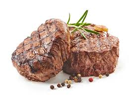

Butter Basted Steak
This Delicious butter basted steak will have you jizzing in your pants! Better than ANY restaurant.
Ingredients
- 12 Oz ribeye steak
- Salt
- Pepper
- Neutral oil
- 2 Tbsp butter
- Crushed garlic
- 2 sprigs rosemary
- 2 sprigs thyme
Steps
- Preheat pan on medium high heat.
- While your pan is preheating, season steak generously with salt and pepper.
- Once hot, add oil.
- Lay steak in gently and sear for 3 mminutes.
- Flip and sear for 2 minutes while lowering heat to meadium low
- For the last minute of cooking, throw in your butter, followed by your rosemary, garlic, and thyme. Spoon the mixture over the steak for30 seconds to a minute.
Voila! In just 5 to 10 minutes, you now have the most amazing steak!